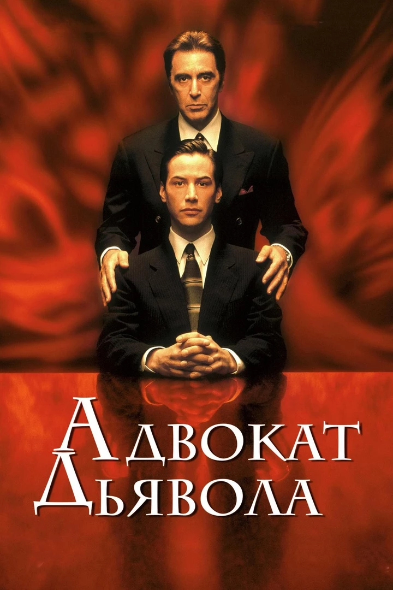
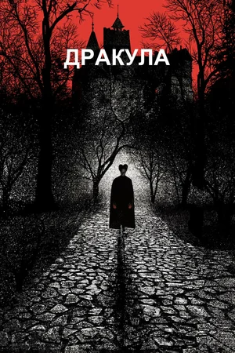
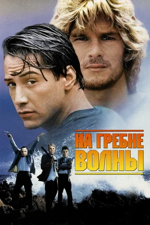
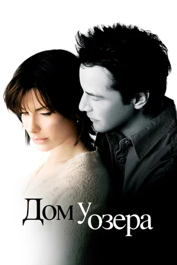

Лучшие фильмы

Джон Уик 4 (2023)
Чтобы обрести свободу, киллер-изгой бросает вызов Правлению кланов. Самая зрелищная часть стильной экшен-саги.
Смотреть

Матрица (1999)
Хакер Нео узнает, что его мир — виртуальный. Выдающийся экшен, доказавший, что зрелищное кино может быть умным.
Смотреть
Музыкальная шкатулка. Вудсток 99: Мир, любовь и ярость (2021)
«Вудсток» охватывает бесконтрольное насилие и хаос. Док о трагических событиях 1999 года глазами очевидцев.
Смотреть
Адвокат дьявола (1997)
Честолюбивый юрист, который защищает негодяев, получает выгодное предложение. Триллер об истинной сути зла.
Смотреть
Дракула (1992)
Граф Дракула приезжает в Лондон соблазнить невесту своего юриста. Будоражащая экранизация романа Брэма Стокера.
Смотреть
На гребне волны фильм (1991)
Агент ФБР внедряется в банду серфингистов-грабителей. Боевик с молодым Киану Ривзом, наполненный духом свободы.
Смотреть